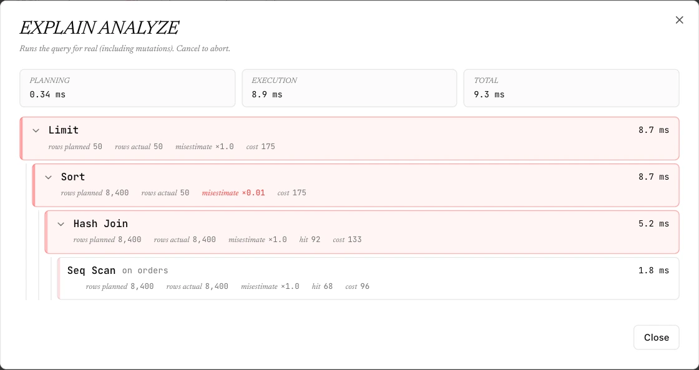

Postgres
Schema-aware SQL editing, typed results and a plan inspector. Work through a script without losing its individual results.
Postgres, Redis and OpenSearch, with the right tools for each.
Write SQL, inspect keys and search documents from your desktop.

Schema-aware SQL editing, typed results and a plan inspector. Work through a script without losing its individual results.
A namespace browser, typed values and TTLs. Open the CLI, slow log or pub/sub view to investigate further.
Search with a query string or raw DSL. Select fields, expand documents and inspect mappings alongside your indexes.

Compare estimated and actual rows, then follow timings through the execution tree. EXPLAIN ANALYZE executes the query.
Local connections and query history. Apache-2.0 source.
AI is optional and uses your own OpenRouter key.